Kinematic Velocity Modelling (KVM): A QGIS Plugin for Circular Statistical Analysis of GNSS Time Series from CORS
The KVM plugin is a QGIS extension designed to enhance visualisation and kinematic velocity modelling of GNSS Continuously Operating Reference Stations (CORS) observations directly within QGIS.
This plugin presents a computational approach for modelling GNSS horizontal displacements based on circular statistics, where motion is represented as a vector defined by the magnitude and azimuth. The kinematic velocity modelling (KVM) plugin was developed in Python and integrated into QGIS as an open-access tool for loading, visualising, and analysing time series from multiple data services. It supports the PBO and NEU formats and converts displacement data to polar coordinates to compute circular metrics. Circular statistics provide a robust and informative framework for the analysis of GNSS CORS station time series by enabling the interpretation of horizontal displacements as vectorial processes.
A key contribution of this work lies in the distinction between absolute and relative displacement analyses. The absolute displacement method highlights long-term tectonic trends and directional stability, making it particularly suitable for assessing reference frame consistency, intraplate rigidity, and large-scale plate motion. In contrast, the relative displacement method captures short-term directional variability between consecutive epochs, allowing for the identification of oscillatory behaviour, transient displacements, and apparent anomalies, outliers and offsets.
This guide describes the complete workflow, from loading time-series data to generating charts and exporting final outputs.
Download the plugin from this repository in a ZIP file.
Open QGIS version 3 software (It is recommended to use the previous version 3.30).
Enter the option Plugins and then in the option Manage and Install Plugins....
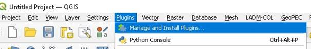
Figure 1 Manage and Install Plugins menu.
Enter the option Install from ZIP.
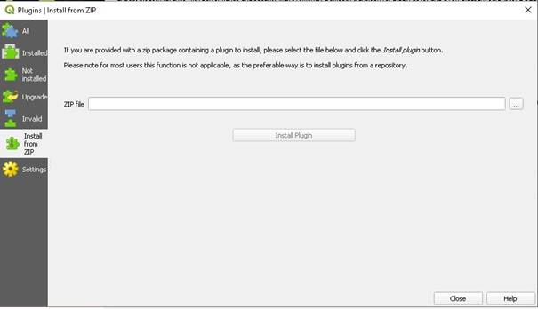
Figure 2 Install the ZIP option.
Upload the ZIP file, and click “Install Plugin”
Indicate that it is a trusted plugin.
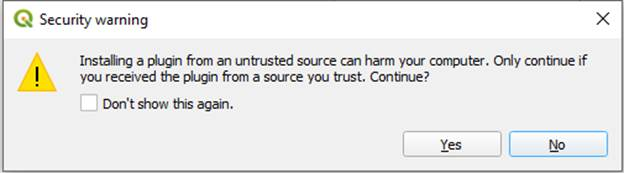
Figure 3 Security warning.
Verify that the plugin is active.
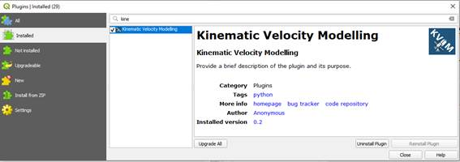
Figure 4 Plugin Verification.
You can check out the step-by-step installation example in the following YouTube resource https://www.youtube.com/watch?v=AUQouvFyt34
Test Data
The shared files correspond to the data sets used in the research and comply with the conditions of use outlined in the licenses and applicable legal provisions.
The test data are in the folder “Timeserie”, available in this repository.
The main KVM panel is typically divided into several sections (Figure 5):
|
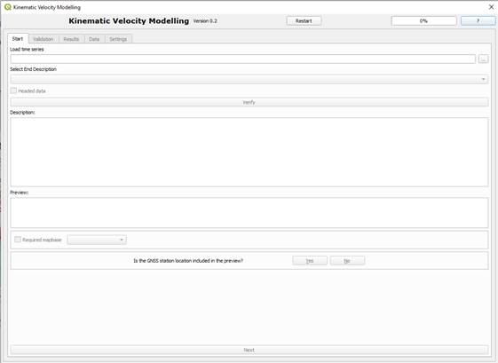
|
Figure 5. General layout of the KVM plugin panel.
Use the drop-down menu to select the time-series file. The plugin supports the PBO and NEU formats.
Next, specify the row where the file description or header section ends (for example: End Field Description, # -----------, etc.).
If the time series contains column headers, enable the corresponding checkbox.
Use the Verify option to preview the loaded data. Adjust the parameters as necessary until the time series is displayed correctly.
The plugin also allows loading a base map from different providers (for example: OpenStreetMap, Google Maps, Bing Satellite, ESRI, etc.).
Indicate whether the time series includes the CORS position for each record:
Select YES if latitude and longitude are included and specify the corresponding column names. In this case, select the fields Latitude and Longitude (Figure 6).
Select NO if coordinates are not included. In this case, the plugin allows selecting the CORS station from a preloaded list (solution for GPS week 2237, day 6, CDDIS).
|
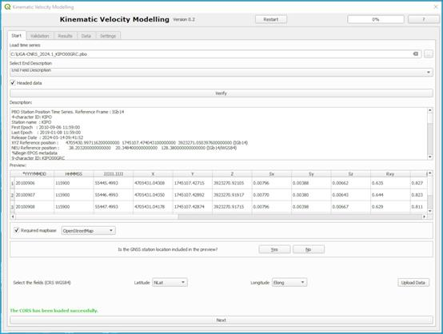 |
Figure 6. Loading time series and input parameters.
Control Buttons
Selecting Time Data (Epoch)
Select the column containing time information (for example: year-month-day (YYYYMMDD), Julian day (JJJJJ.JJJJJ), decimal year (YYYY.YYYYYY) (Figure 7).
|
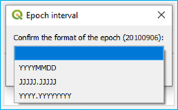
|
Figure 7. Epoch format.
Selecting North Component Differences
Select the column containing differences in the North component relative to the NEU reference position.
Selecting East Component Differences
Select the column containing differences in the East component relative to the NEU reference position.
The KVM plugin automatically generates a Cartesian representation of the North/East differences and displays the data in tabular format (Figure 8).
|
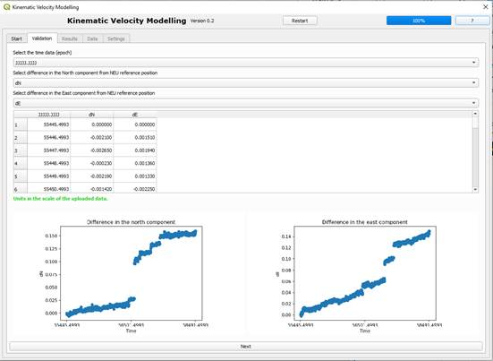 |
Figure 8. Validation menu.
Control Buttons
Method Selection
Two analysis methods are available to analyse the time series information.
Absolute Method:
Each recorded position is compared with the initial position at epoch zero or the selected reference epoch. This method highlights long-term directional trends and persistent patterns of tectonic motion (Figure 9).
Relative Method:
Each recorded position is compared with the position at the immediately preceding epoch. This strategy emphasises short-term directional variability and facilitates the detection of anomalies, outliers and offsets. (Figure 10).
Once displacement vectors are obtained, circular statistical descriptors are computed to evaluate the directional characteristics of the GNSS time series.
Statistical Results for the Absolute Method
CIRCULAR STATISTICS (AZIMUTHS)
Central Tendency
Dispersion
Shape
Epoch Interval
|
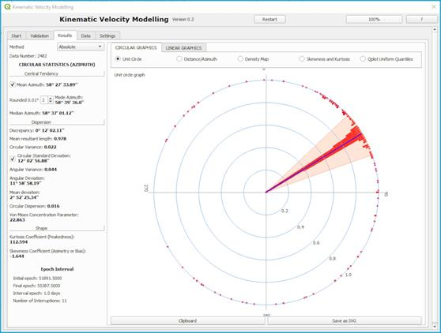 |
Figure 9. Absolute method results.
Statistical Results for the Relative Method
CIRCULAR STATISTICS (AZIMUTHS)
Central Tendency
Dispersion
Shape
Detection of anomalies, outliers, and offsets.
Analysis based on the methodology defined by the NATO Standardisation Agreement (STANAG).
Outputs include:
|
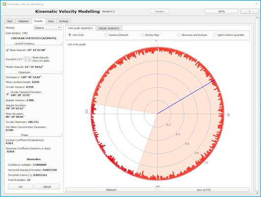 |
Figure 10. Relative method results.
List
Displays the detected anomalies, identifying those where the residual/days exceeds the threshold criteria. (Figure 11). Generating an analysis report.
|
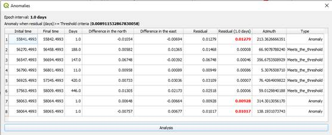
|
Figure 11. Anomalies list.
Visualisation
The anomalies visualisation is performed as shown in Figure 12:
|
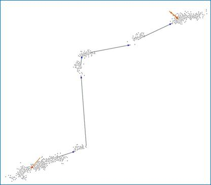 |
Figure 12. Anomalies visualisation.
Graphical Results
Circular Graphics
Linear Graphics
Export Options
This panel offers two export options:
The Data menu displays all processed records, including:
In the Absolute mode, Distance and Azimuth were calculated for the first record of the time series.
In the Relative mode, Distance and Azimuth were calculated relative to the previous record in the time series.
Data can be exported in CSV format.
|
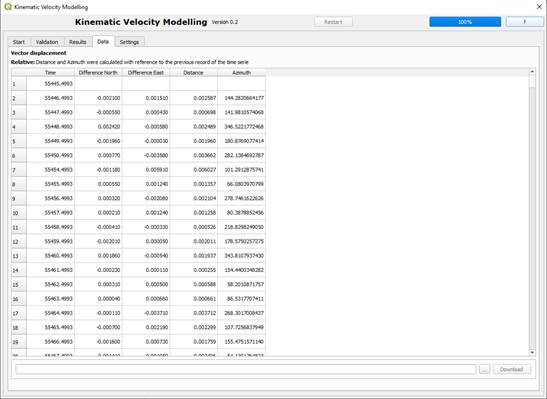 |
Figure 13. Data menu.
Graphic Settings
Configure graphical outputs:
Report Settings
Configure the generated report (Figure 14):
|
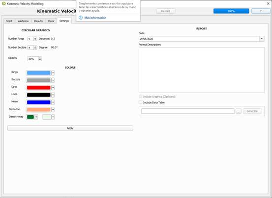 |
Figure 14. Settings menu.
References:
Batschelet, E. (1981). Circular Statistics in Biology. Academic Press.
Cihangir Akşit, E., 2010. Evaluation of Land Maps, Aeronautical Charts and Digital Topographic Data https://www.intertekinform.com/en-us/standards/stanag-2215-2010-736757_saig_nato_nato_1789654/
Fisher, N. I. 1993. Statistical Analysis of Circular Data. Cambridge University Press. https://doi.org/10.1017/CBO9780511564345
Mahan, R. P. (1991). Circular Statistical Methods: Applications in Spatial and Temporal Performance Analysis. United States Army Research Institute for the Behavioral and Social Sciences, Special Report 16.
Mardia, K., & Jupp, P. 2000. In Directional Statistics. https://doi.org/10.1002/9780470316979
Mardia, K. V., 1975. Statistics of Directional Data. Journal of the Royal Statistical Society. Series B (Methodological), 37(3), 349-393. http://www.jstor.org/stable/2984782
Ratanaruamkam, S. (2006). New Estimators of a Circular Median. Western Michigan University.
Zar, J. H. (1996). Biostatistical Analysis (3.a ed.). Prentice Hall.
License
Copyright (C) 2026, Anonymous authors. This program is free software: you can redistribute it and/or modify it under the terms of the GNU General Public License as published by the Free Software Foundation, either version 3 of the License, or any later version. This program is distributed in the hope that it will be useful, but WITHOUT ANY WARRANTY; without even the implied warranty of MERCHANTABILITY or FITNESS FOR A PARTICULAR PURPOSE. See the GNU General Public License for more details. You should have received a copy of the GNU General Public License along with this program. If not, see https://www.gnu.org/licenses/.